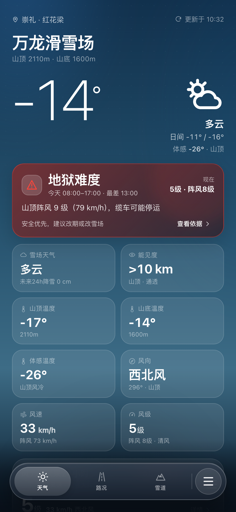
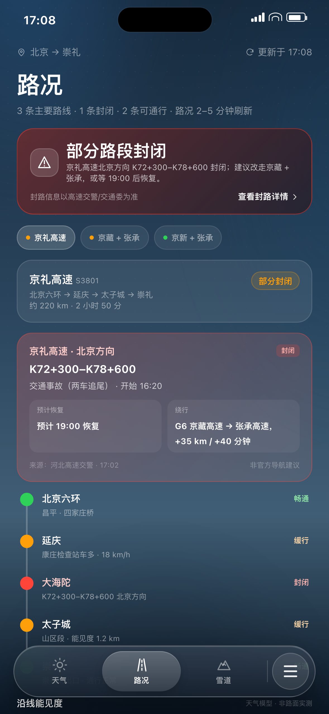
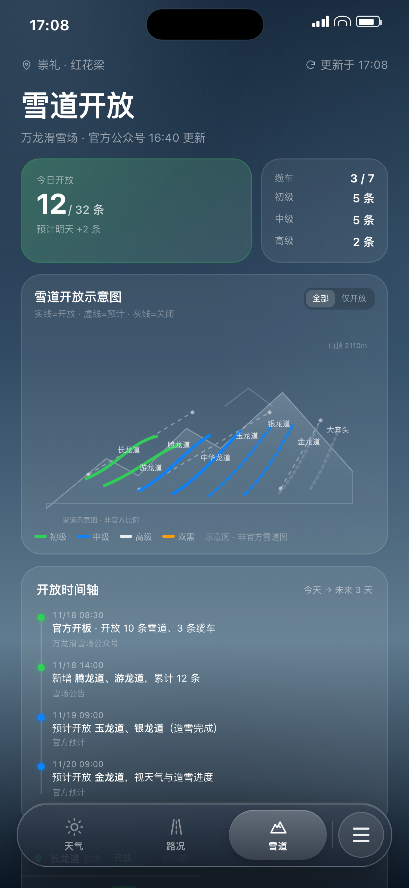
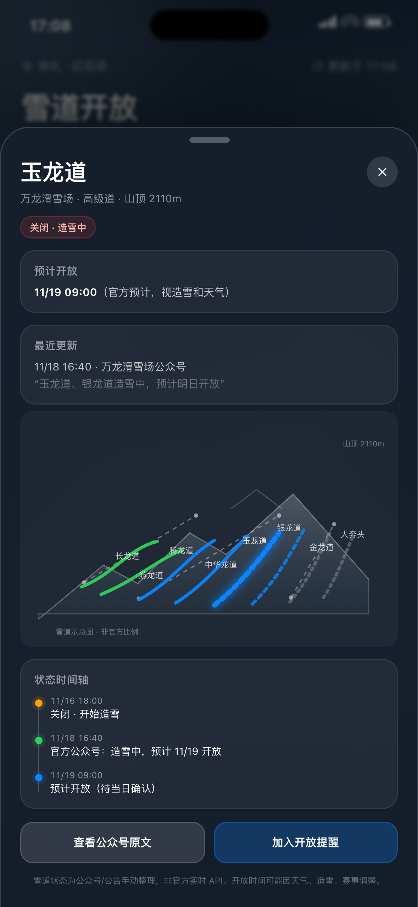
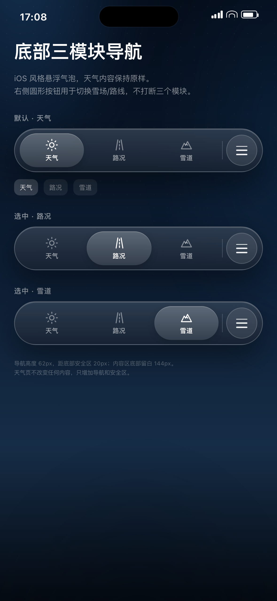

SKI WEATHER · MODULE REVIEW
滑雪天气通 · 三模块效果图
天气 / 路况 / 雪道 · iOS 底部气泡导航
天气内容保持原样，只新增底部导航
路况与雪道为演示数据，标注了“示意/官方来源”
截图尺寸 393×852 @3x

01 · 天气
底部三模块导航

02 · 路况
三条路线 + 封路卡
03 · 封路详情
路段 / 时间 / 绕行

04 · 雪道开放
示意图 + 时间轴

05 · 雪道详情
状态 / 预计 / 来源

06 · 底部导航
三种选中态
路况与雪道状态在上线时需接入官方/授权数据或人工核验；示意图不代表官方雪道图。
滑雪天气通 · 设计稿 v2